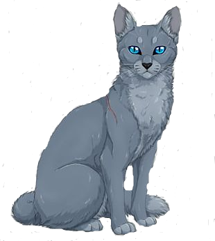

hola a todos bienvenidos a mi pagina de mi canal de youtube aqui ebcontraras el alojamiento de descarga a lo que suba en mi canal entonces vamos a ver y mienstras pase el tiempo mas ire añadiendo aqui a esta pagina
en la parte de noticias esa sera la parte que estara mas en actualizacion ya que alli estare poniendo los cambios que valla ocurriendo con el canal, si encontrastes esta pagina y no conoces mi canal todo lo estare avisando aqui y en mi canal de youtube puedes visitar mi canal haciendo click aqui
La parte de Noticias y sector de descarga estan en construccion es posible que esa parte no este todavia disponible, la parte de descargar manuales los manuales estan hechos por mi si no estan es porque aun no estan disponibles
Contenido Proximo por añadir:sigueme en mi canal de youtube si no lo has hecho y el link de mi imagen de canal de youtube
Puedes darme ideas para subir en mi canal sigueme en mis redes sociales por ahora solo tengo discord unete y alli pasamos un rato tranquilo y emocionante
En la parte de Descarga ire subiendo temas para windows 7 en adelante, packs de efectos de sonidos, manuales sobre programacion esa parte esta en construccion, por ahora aunque hay mas que ire poniendo aqui en la parte de noticia se publicara las descripciones de las adicciones a este sitio web
Seleccione en la lista (cuando este disponible la iteraccion) para tener vista previa en formato pdf la lista de cambios